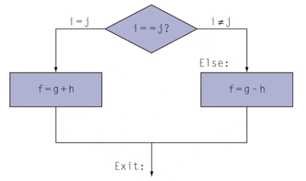

Disciplinas
-
SISTEMAS COMPUTACIONAIS. Concluído
Materiais
Vídeo 2 - 2.5 - Arquitetura de Computadores - Operações Condicionais. sendProf° ministrante: Emílio Francesquini.
Conteúdo
Arquitetura de Computadores.
Operações Condicionais
Operações condicionais.
- Branch para uma instrução etiquetada (en: labeled) se a condição for verdadeira
- Senão continua como se nada tivesse ocorrido
- if (rs == rt) branch para a instrução etiquetada L1
beq rs, rt, L1
bne rs, rt, L1
j L1
Compilando um if.
if (i == j)
f = g + h;
else
f = g - h

Com f, g, h, i, j em $s0, $s1, $s2, $s3, $s4. respectivamente.
Código MIPS compilado:
# se (i!= j) pula para Else
bne $s3, $s4, Else
add $50, $s1, $s2
j Exit
Else:
sub $s0, $s1, $s2
Exit:
...
Compilando laços.
while (save[i] == k) i+= 1;
Onde i está em $s3, k está em $s5 e save está em $s6
Código MIPS compilado:
Loop:
sll $t1, $s3, 2
add $t1, $t1, $s6
lw $t0, 0($t1)
bne $to, $s5, Exit
addi $s3, $s3, 1
j Loop
Exit: ...
Blocos básicos.
- Um bloco básico é uma sequência de instruções com
- Nenhum branch (exceto no final)
- Nenhum alvo de branches (exceto no início)
- Compiladores utilizam blocos básicos para otimização
- Um processador moderno é capaz de acelerar a execução de um bloco básico
Algumas operações condicionais a mais...
slt: (set if less than) escreve 1 no resultado caso a condição seja verdadeira
Escreve 0 caso contrário
if (rs < rt)
rd = 1;
else
rd = 0;
slt rd, rs, rt
Há a versão com imediato slti
if (rs constante)
rt = 1;
else
rt = 0;
slti rt, rs, constant
Útil para combinar com beq ou bne:
slt $to, $s1, $s2 # if ($s1 < $s2)
bne $to, $zero, L # branch para L
Sobre o design das instruções de branches.
- Por que não blt, bge, ...?
- O hardware para <, >,... é mais lento que para =, ≠
- Combinado com branches, isso significa mais trabalho por instrução o que causaria um clock mais lento
- Todas as demais instruções acabam sendo penalizadas
- beq e bne são os casos mais comuns.
- Um bom compromisso entre complexidade e desempenho
Operações com sinal e sem sinal.
- Comparações com sinal: slte e slti
- Comparações sem sinal: sltu e sltui
- Exemplo:
s0 = 1111 1111 1111 1111 1111 1111 1111 1111
s1 = 0000 0000 0000 0000 0000 0000 0000 0000
slt $to, $s0, $s1 # com sinal
-1 < +1 → $t0 = 1
sltu $to, $so, $s1 # sem sinal
+4.294.967.295 > +1 → $t0 = 0